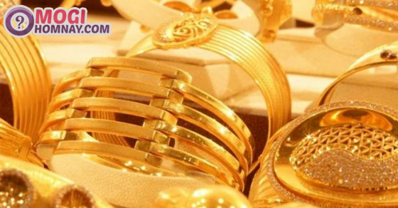

Nằm mơ thấy vàng đánh con gì, số mấy? Điềm báo lành hay dữ?
- Quảng Ninh: xe khách bị container đè bẹp, nhiều người thương vong
- Lào Cai: Xe cẩu lao xuống vực, 2 người mắc kẹt trong cabin
- Mơ thấy chó chết là điềm gì? Nằm mơ thấy chó chết đánh con gì?
- Đồng Nai: Người phụ nữ tử vong ngay khi va chạm với xe Ben
- Nằm mơ thấy cà phê đánh con gì? Chiêm bao thấy cà phê điềm gì?
Mơ thấy vàng là điều vui sướng, ước ao của nhiều người, giấc mơ này mang tới nhiều điều thú vị cho mỗi chúng ta. Tuy nhiên, nằm mơ thấy vàng cũng như những giấc mơ khác, nó luôn ẩn chứa điềm báo và những con số liên quan. Cùng tham khảo nội dung dưới đây để có thể giải mã mơ thấy vàng là điềm gì? Đánh con gì, số mấy?
1. Mơ thấy vàng là điềm gì?
Nằm mơ thấy vàng
Nằm mơ thấy vàng là giấc mơ là giấc mơ thể hiện bạn đang rất khao khát có một khoản tiền lớn, mong muốn đạt được thành công. Với chiêm bao thấy vàng này, hãy nắm bắt cơ hội thăng tiến sắp tới.
Nằm mơ thấy mất vàng
Giấc mơ thấy bị mất vàng là điềm báo xấu, sắp tới cần cẩn trọng để tránh bị trộm cắp, hao tốn tiền bạc trong thời gian tới. Bên cạnh đó, khi gặp chiêm bao thấy mất vàng này bạn cũng nên chủ động trong việc bảo quản tài sản và đề phòng kẻ gian.
Mơ thấy mua vàng
- Chiêm bao thấy mua vàng báo hiệu rằng sắp tới bạn sẽ hao tốn tiền bạc cho các dự định hoặc giải quyết những khó khăn, cần lên kế hoạch trước để tránh việc bị biến động tài chính.
- Nằm mơ đi mua vàng, hay bạn đang trên đường đi mua vàng thì giấc mơ này cho thấy bạn có nhiều may mắn khi kinh doanh, tuy nhiên chuyện tình cảm là một trong những nhân tố khiến công việc của bạn bị đình trệ. Vậy nên, để thành công hơn nữa thì ngoài may mắn thì bạn đừng để chuyện tình ảnh hưởng tới công việc.
Giải mã giấc mơ thấy vàng là điềm gì?
Nằm mơ thấy bán vàng
Giấc mơ thấy bán vàng cho thấy bạn đang có vận may về tài lộc, nếu đang có ý định kinh doanh thì nên thực hiện ngay.
Mơ bắt được vàng
Nằm mơ thấy bắt được vàng là điềm báo nhắc nhở bạn cần xem lại cách nhìn nhận và phán đoán của mình với những sự việc xảy ra trong cuộc sống, không nên đưa ra những phán đoán chủ quan mà cần tìm hiểu bản chất của nó để tránh những hao tổn trong thời gian tới.
Mơ thấy vàng thỏi
Nằm mơ thấy vàng thỏi là lời cảnh báo bạn nên thận trọng với những lợi ích trước mặt, những cái lợi trước mắt thường không lâu bền, vậy nên đừng bị lóa mắt bởi những vật chất phù phiếm xa hoa này.
Nằm mơ thấy tiền vàng
Giấc mơ thấy tiền vàng mã, chiêm bao mơ thấy vàng và tiền cho thấy bạn đang gặp nhiều rắc rối trong chuyện tài chính. Có những vấn đề khiến bạn băn khoăn không biết lựa chọn như thế nào nhưng lại không nhận được những lời khuyên từ những người xung quanh.
Nằm mơ thấy vàng 24k
Chiêm bao thấy vàng 24k hàm ý bạn đang muốn thay đổi tình hình tài chính của mình, có thể là hiện tại vấn đề tiền bạc của bạn chưa được lạc quan lắm, tuy nhiên thời gian không xa những ước mơ của bạn sẽ được thực hiện.
Nằm mơ thấy vàng bạc
Giấc chiêm bao thấy vàng bạc này cho thấy bạn đang bị ám ảnh hoặc sùng bái 1 điều gì đó. Đừng nên đắm chìm bản thân vào những thứ không có thật như vậy.
Mơ thấy trang sức vàng
- Ngủ mơ thấy vàng trang sức như nằm mơ thấy bông tai, hoa tai, khuyên tai vàng thì giấc mơ này hàm ý bạn là người rất quan tâm tới vẻ bề ngoài, sự sang trọng và hào nhoáng là yếu tố hàng đầu mà bạn quan tâm.
- Nằm mơ thấy đồng hồ vàng ám chỉ bạn đang muốn thay đổi và trở nên hoàn thiện hơn, lời khuyên dành cho bạn là điều gì cũng cần thời gian và bạn không nên quá gấp gáp tránh xôi hỏng bỏng không nhé.
Mơ thấy đeo vàng
Chiêm bao thấy đeo vàng cho thấy những điều may mắn xung quanh bạn, đặc biệt nếu bạn mơ thấy người ta đeo vòng vàng cho mình thì giấc này còn cho thấy bạn có người nâng đỡ và hỗ trợ để thành công.
Nằm mơ thấy lượm được vàng là điềm gì?
Giấc mơ thấy lượm vàng mang ý nghĩa cảnh báo, nhắc nhở bạn không nên tham lam những thứ không thuộc về mình, có thể đó là cái bẫy người khác tạo ra để thử lòng hoặc hãm hại bạn.
Mơ thấy người khác cho vàng
- Bạn mơ thấy được cho vàng, người đó có thể là người lạ hay người thân thì giải mã giấc mơ thấy người khác cho vàng này ám chỉ bạn đang phụ thuộc quá nhiều vào người khác, nếu muốn thành công thì bạn nên rèn luyện tính tự lập, đừng nên trông chờ như giấc mơ thấy người ta cho vàng này.
- Mơ được tặng vàng thể hiện sự nghiệp thành công của bạn, xung quanh có rất nhiều người muốn lấy lòng và nhờ vả bạn.
- Nằm mơ thấy cho vàng người khác là điềm báo không tốt, bạn không có chính kiến và rất dễ nghe theo những lời nói của người xung quanh.
Chiêm bao thấy vàng
Ngoài những giấc mơ thấy nhiều vàng, mơ thấy đeo vàng, mơ thấy bán vàng hay đang ăn trộm vàng, những giấc mơ thấy vàng mà bạn có thể bắt gặp nhiều như:
- Nằm mơ tìm vàng: Bạn có những tài năng mà nhiều người chưa biết và chính bạn cũng chưa khai thác hết, nên rèn luyện và học hỏi nhiều hơn.
- Mơ thấy vàng lá: Tương lai phát triển thuận lợi, có nhiều cơ hội mới
- Mơ thấy đồng tiền vàng: Điềm báo cho sự thành công và giàu có
- Mơ thấy bụi vàng: Một mối quan hệ nào đó của bạn sẽ bị tan vỡ.
- Nằm mơ thấy bạn đang đi đào vàng: Đừng tự cao quá về bản thân, nếu không bạn sẽ gặp nhiều rắc rối
- Nằm mơ thấy vàng trắng tượng trưng cho sự giàu sang và quyền lực mà bạn đang ước mơ, cũng chính vì những mơ ước này mà bạn luôn nỗ lực hết mình để thực hiện mục tiêu đó.
2. Mơ thấy nhẫn vàng
Giấc mơ thấy nhẫn vàng mang điềm báo về chuyện tình cảm và tài chính của bạn.
- Nếu đang làm ăn kinh doanh mà mơ thấy nhẫn vàng là dấu hiệu của sự phát tài, công việc làm ăn sắp tới sẽ vô cùng thuận lợi. Tuy nhiên, nếu nằm mơ thấy người khác đưa bạn nhẫn vàng thì hãy cẩn thận, có thể bạn sẽ phải chịu thiệt thòi và đền bù cho người khác.

Nằm mơ thấy nhẫn vàng là điềm gì?
- Mơ thấy nhiều người đeo nhẫn vàng hay chính mình nằm mơ thấy đeo nhẫn vàng điềm báo cho những vận hạn của bạn sắp xảy ra, hãy cẩn thận để phòng tránh với những tai ương sắp tới nhé.
- Mơ thấy mua nhẫn vàng cho thấy tiền bạc, sự nghiệp của bạn không ổn định, có thể trong thời gian tới bạn sẽ gặp khó khăn trong công việc hoặc có sự thay đổi về công việc hiện tại.
- Nằm mơ thấy bán nhẫn vàng nên đề phòng tài sản hao hụt, chú ý những chuyện liên quan tới tiền bạc, đặc biệt là tài sản chung.
- Mơ thấy mất, làm rơi nhẫn vàng là điềm báo trong cuộc sống sắp tới có sự cố, sóng gió lớn.
- Nằm mơ thấy lượm được nhẫn vàng, cần cẩn thận với những món quà không rõ địa chỉ hoặc những đồ vật hào nhoáng bên ngoài.
3. Mơ thấy dây chuyền vàng
- Mơ thấy đeo dây chuyền vàng là sự may mắn trong chuyện tình cảm, các mối quan hệ trong gia đình luôn hòa thuận, ít mâu thuẫn, cãi vã.
- Mơ thấy được tặng dây chuyền vàng bạn sẽ được quý nhân phù trợ, công việc làm ăn sắp tới gặp nhiều thuận lợi, tài lộc gõ cửa.
- Mơ thấy bị giật mấy dây chuyền vàng điềm báo rằng trạng thái tâm lý của bạn không ổn định, công việc và cuộc sống sắp tới sẽ có thay đổi. Nên thận trọng trước khi đưa ra những quyết định trong thời gian tới.
- Mơ thấy mua dây chuyền vàng báo hiệu thời gian tới có thể bạn sẽ tiêu tốn nhiều tiền bạc vào những chuyện không cần thiết, vậy nên ngay từ bây giờ bạn hãy kiểm điểm lại bản thân đi
4. Mơ thấy vòng vàng, lắc vàng
- Nằm mơ thấy vòng vàng mang điềm báo về mặt tình cảm, những bạn độc thân thì sắp tới sẽ tìm được nửa kia của mình, hãy trân trọng cơ hội sắp tới.
- Nằm mơ thấy vòng vàng bị gãy báo hiệu một mối quan hệ nào đó của bạn bị tan vỡ, có thể nó đã bị rạn nứt từ lâu và không thể hàn gắn nên bạn cũng đừng quá đau lòng.
- Mơ thấy đeo vòng vàng, đeo lắc tay vàng là điềm báo may mắn, thuận buồm xuôi gió trong cả chuyện tình cảm lẫn sự nghiệp.
- Giấc mơ thấy lắc vàng, vòng tay vàng hàm ý bạn đang được nhiều người để ý, rất có thể bạn sẽ tìm được nửa kia của cuộc đời mình vào một ngày không xa trong thời gian tới.
5. Mơ thấy vàng đánh con gì?
Chiêm bao thấy vàng là số mấy, giải mộng giấc mơ thấy người khác cho vàng đánh con gì, nằm mơ thấy vàng đánh số mấy. Dưới đây là những con số được sổ mơ đánh đề luận được ra từ những giấc mơ thấy vàng
Mơ thấy vàng đánh con gì?
- Nằm mơ thấy vàng đánh số gì? Nếu bạn chiêm bao thấy vàng đánh đề số 37, 92
- Mơ thấy nhẫn vàng đánh con gì?
+ Nằm mơ thấy bán nhẫn vàng đánh số 67
+ Nằm mơ thấy đeo nhẫn vàng đánh con 10
+ Nằm mơ thấy nhẫn vàng bị gãy đánh 12
+ Nằm mơ thấy nhẫn vàng đánh 00, 10, 01
- Mơ thấy dây chuyền vàng đánh con gì?
+ Mơ thấy dây chuyền vàng bị đứt đánh con 15, 47
+ Mơ thấy đeo dây chuyền vàng đánh con 34, 85
+ Mơ thấy nhặt được dây chuyền vàng đánh 04, 27
+ Mơ thấy được cho dây chuyền vàng đánh ngay số 03, 12
- Mơ thấy nhiều vàng đánh đề con 79
- Mơ thấy con trai con trai cho vàng đánh 43
- Mơ thấy được người khác cho vàng đánh con gì? Đánh ngay cặp 27, 72
- Mơ thấy mất vàng đánh 07
- Mơ thấy vàng thỏi đánh 82
- Chiêm bao thấy vàng giả đánh 60
- Mơ thấy mò vàng dưới sông đánh 39, 38
- Nằm mơ thấy quan tài vàng đánh đề 74
Trên đây là giải mã giấc mơ thấy vàng đánh con gì, điềm báo lành hay dữ. Hy vọng các bạn qua chia sẻ này sẽ giải đáp được những bí ẩn của giấc mơ nhìn thấy vàng và chọn được các con số may mắn từ tịch số đề vàng nhé.
Xem thêm: Nằm mơ thấy bếp lửa là điềm báo gì? Đánh con gì dễ trúng?